Prólogo: las sombras del siglo de oro
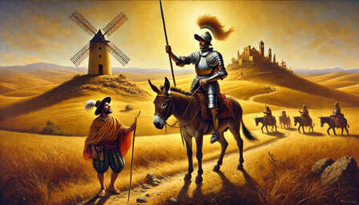
Un capítulo perdido de don quijote
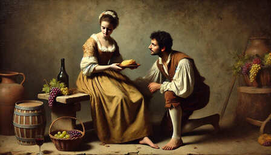
Un amor oculto en fuenteovejuna
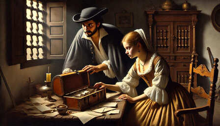
Un espía satírico en la corte
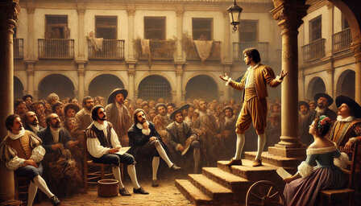
Un duelo literario en la sevilla renacentista
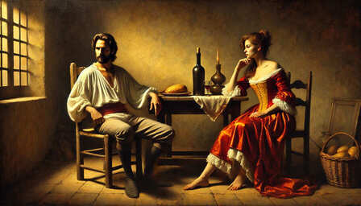
Un nuevo don juan en la modernidad
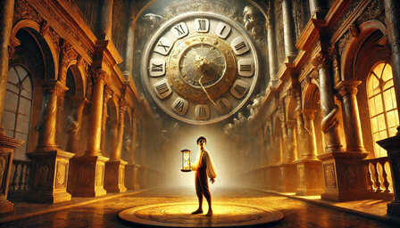
El tiempo onírico
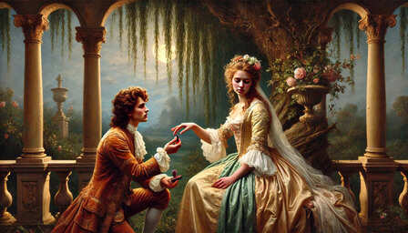
El poeta y la princesa
El diario místico de santa teresa
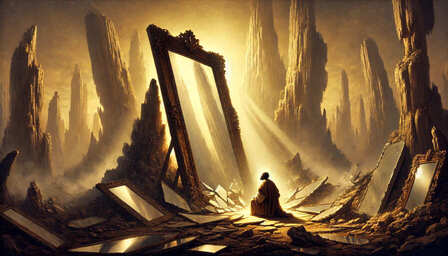
El peregrino y el tesoro espiritual
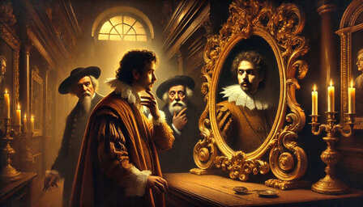
El espejo encantado de luis vélez de guevara
La academia secreta de baltasar gracían
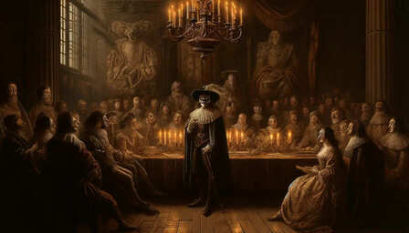
El juicio de las máscaras
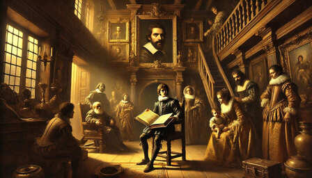
El manuscrito maldito
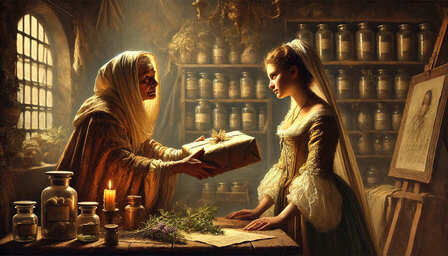
El último encargo de la celestina
El estudiante y los manuscritos perdidos de luis de león
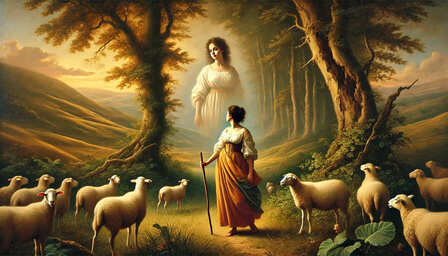
La pastora y su búsqueda
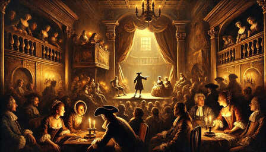
Intrigas en el teatro clandestino
La conspiración de la gramática
El fraile y la tierra de maravillas
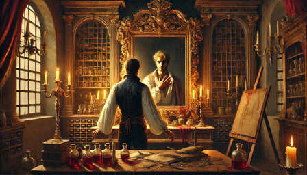
El espejo encantado
Epílogo: la memoria de los siglos